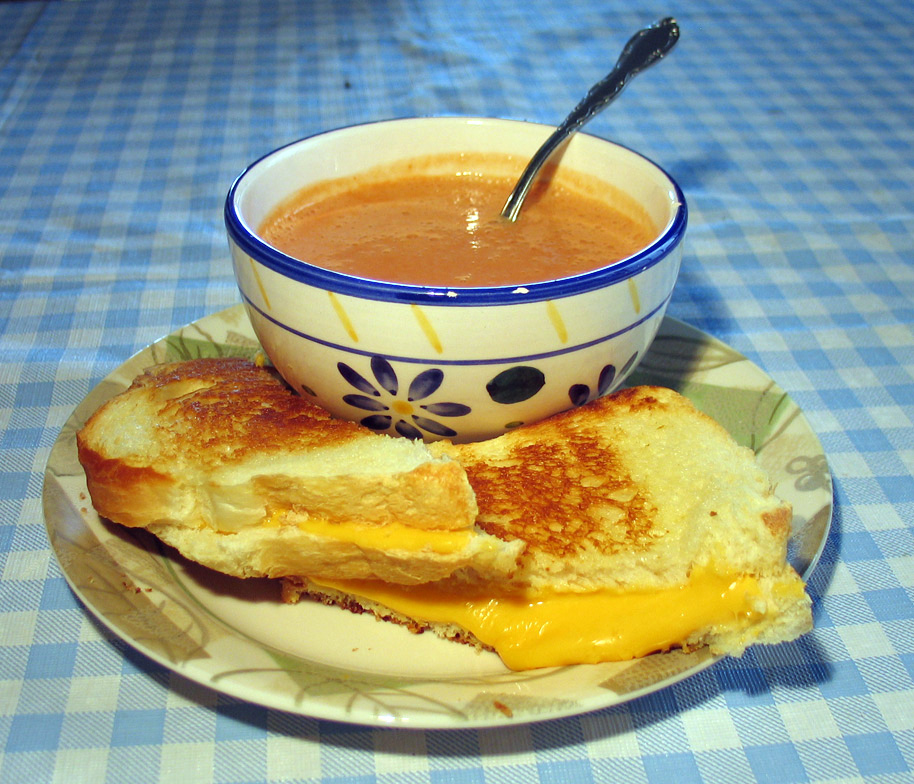
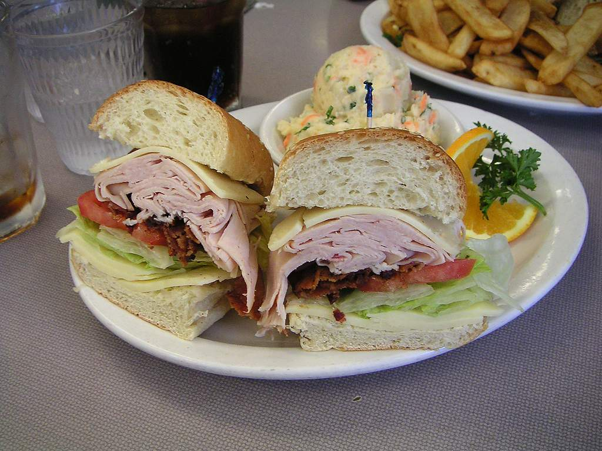
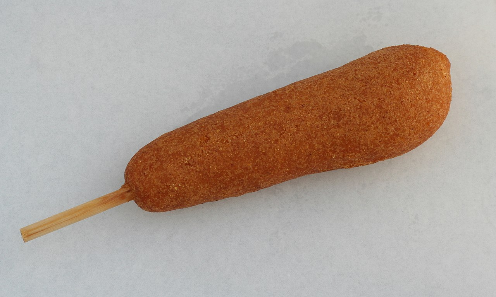
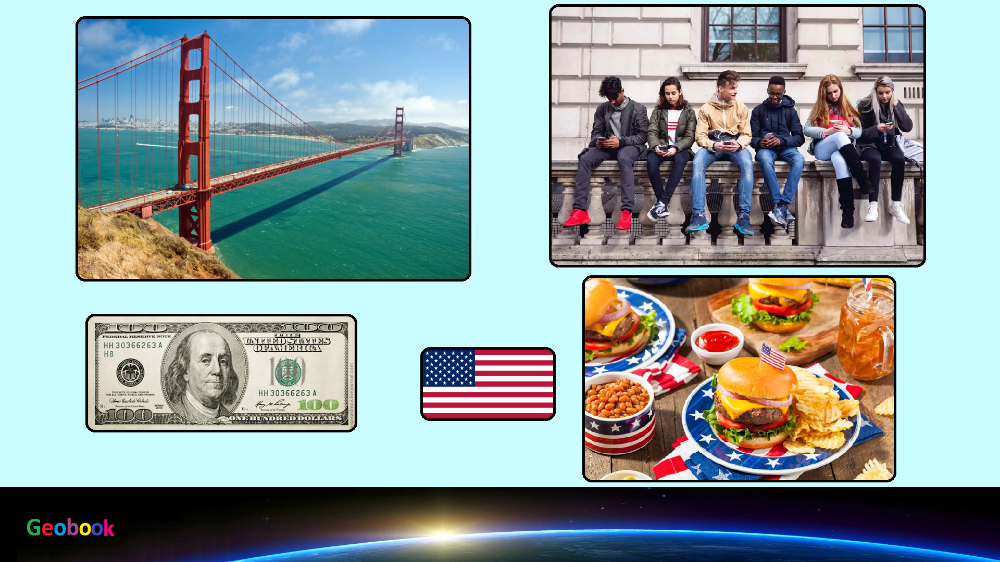

____
Традиционная еда
Американский сыр — молочный продукт, плавленый сыр популярный в США, который вырабатывается из сычужных сыров, сыров для плавления, творога, масла и других молочных продуктов с добавлением специй и наполнителей путём плавления сырной массы (при температуре 75-95 °C.) — сделан из смеси сыров, чаще всего колби и чеддер.

Гамбургер — вид сэндвича, состоящий из разрезанной пополам булочки и рубленой жареной котлеты. В дополнение к мясу гамбургер может иметь большое количество разнообразных наполнителей, например: кетчуп и майонез, дольку кабачка, листья салата (Lactuca sativa), маринованный огурец, сырой или жареный лук, помидор.

Сэндвич — блюдо, состоящее из двух или нескольких ломтиков хлеба (часто булки) и одного или нескольких слоёв мяса и/или других начинок.

Корн-дог — сосиска, которая покрывается толстым слоем теста из кукурузной муки и жарится в горячем масле. Корн-дог — это аналог сосиски в тесте или хот-дога. Почти всегда подаются на деревянной палочке, хотя некоторые ранние версии не имели палочек.

____
